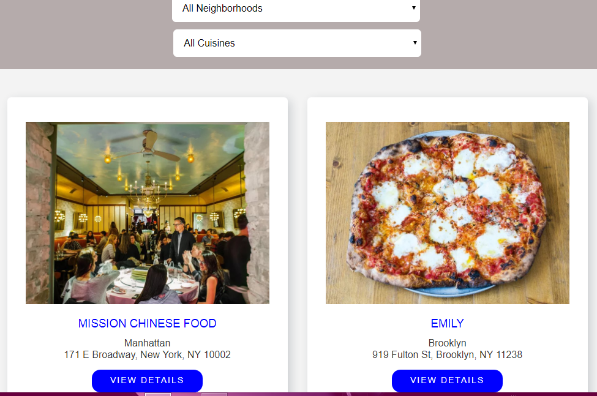

Restaurants Reviews App
By Kingsley
An app that helps people choose restaurants based on proximity and quality of reviews
Project Features
-
Built on
August 2018
Details
This web app is awesome. It is a part of projects from the Udacity's Mobile Web Specialist program. The app has many features. Which includs: It is very responsive. It has high quality accessibility features. It uses the cache API to store the site's data on the client's machine. This gives it the capability to work on a slow or no network at all. Awesone right?
View Project